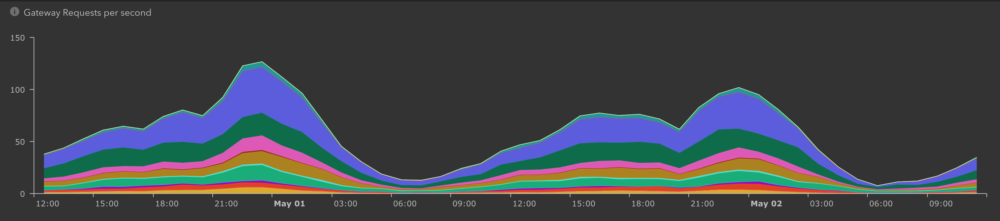
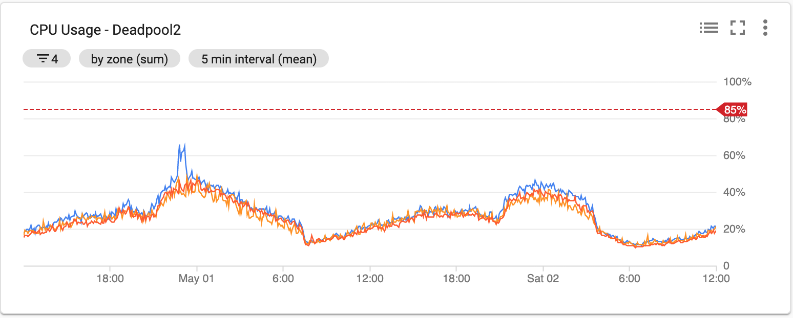

Quality in a Highly
Transactional System
Qualidade de Software - Escola Superior Tecnologia e Gestão, IPL, 18 May
Who am I?
- Full Cycle Developer
- Tech Lead@Project A
- @pontoporponto
- Github
- 20 years of backend development (mostly!)
Mindera
We use technology to build products we are proud of with people we love
Handbook
What is Quality?

What is Quality?
- Fit for use or purpose
- Degree of excellence of something
> #### Quality is a perceptual, conditional, and somewhat subjective attribute and may be understood differently by different people
What is Quality?
Software Engineering
- (Non)Functional Requirements
- Verification & Validation
- Test Pyramid
Full Cycle Developer
> #### “Operate what you build” puts the devops principles in action by having the team that develops a system also be responsible for operating and supporting that system
Project A - Client X
- Microservices Architecture
- 25 services - 90 pods
- Java/Spring - NodeJs
- Kubernetes
- Google Cloud Platform
- 5 people
Project A - Client X
 Project A - Wall of Shame
- No Code Coverage
- No Static Code Analysis
- Few Integration tests
- No Stress tests
Quality is Ownership
Empower each team member to react
to a crisis on its own
- No restrictions to production infrastructure
- Trainning on tooling
- No single point of contact
Quality is Proper Tooling
No more, no less
Just the amount needed
- Trainning on tooling
Quality is Focus
<not-core-business>-as-a-Service
- Cloud Provider
- Pipeline
- Telemetric systems
## Quality is Monitoring
## Quality is ~~Monitoring~~ Observability
- Observability is the new Monitoring
- Headlump for Production
- Answer to the future unknows
- Logging; Metrics; Alarms
Quality is Observability
Domain-Oriented Observability
- Domain Probe
- Testing Observability
Quality is Resilience
> #### Everything fails all the time
- Embrace Errors and Failures
- MTTR - Mean Time To Recovery
- Business Continuity
Quality is Feedback
> #### Improving daily work is even more important than doing daily work
Phoenix Project
Quality is Teamwork
> #### A great team doesn’t mean that they had the smartest people. What made those teams great is that everyone trusted one another. It can be a powerful thing when that magic dynamic exists.